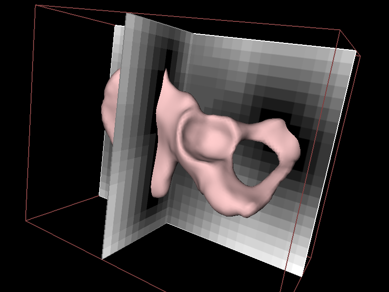
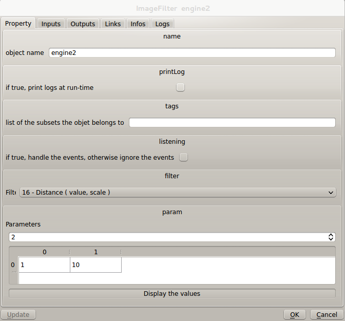

PluginImage distanceFieldFilter
This example shows an other function of the ImageFilter component. From an image input, it can compute a new image where every pixel contains the distance to the closest value put into the ImageFilter parameters. The scale is the multiplier of the true distance.
This new image is called a distance map or field.

